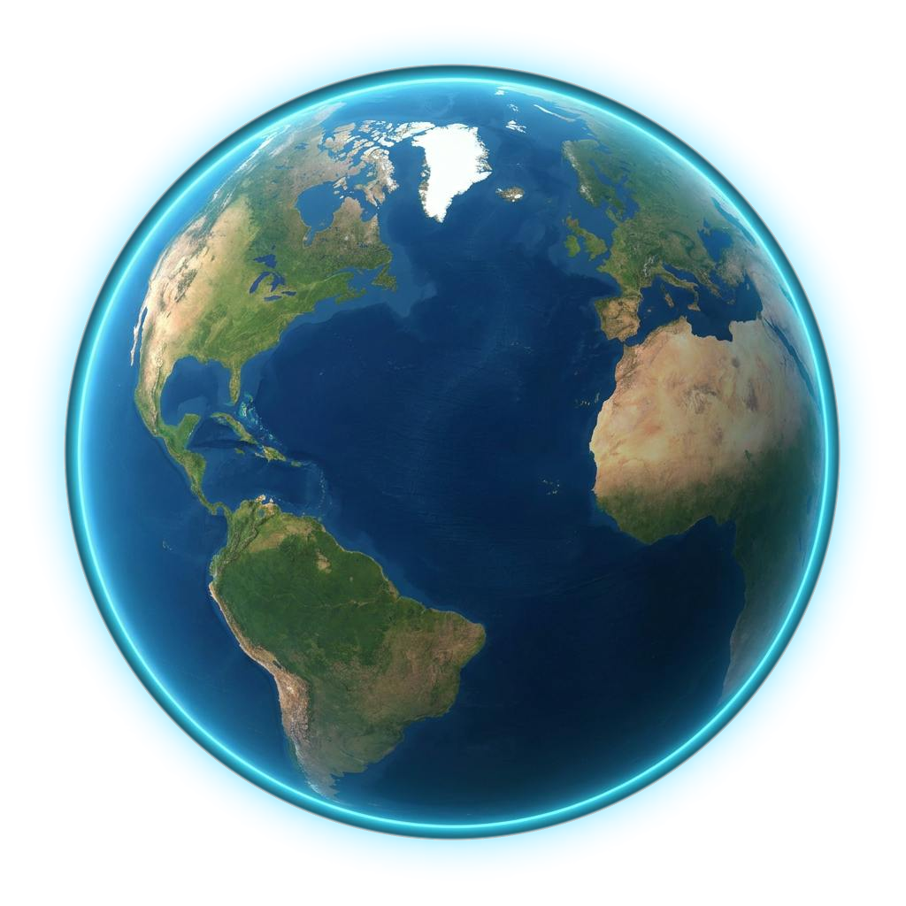
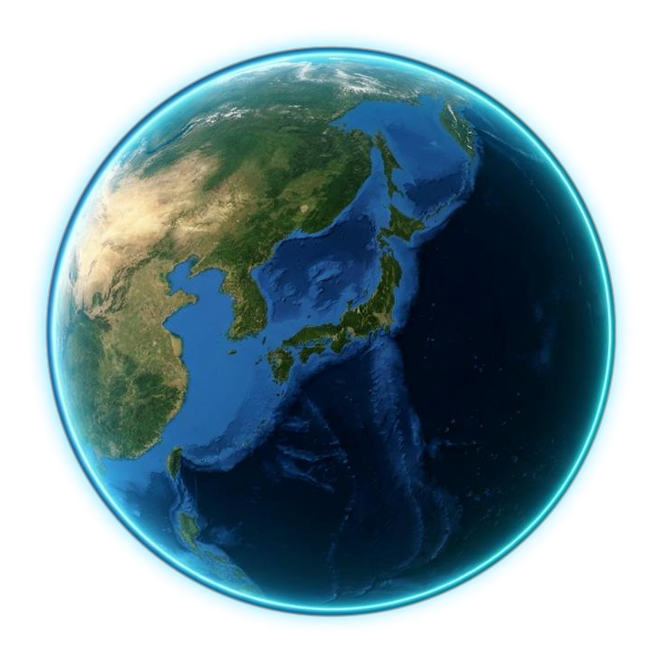

Where people live longest
The Blue Zones.
No one there is in a hyperbaric chamber or injecting peptides. They walk, garden, eat well, and sleep and wake with the sun.
Loma Linda
California
Nicoya
Costa Rica
Sardinia
Italy
Ikaria
Greece
Okinawa
Japan
07 / 21